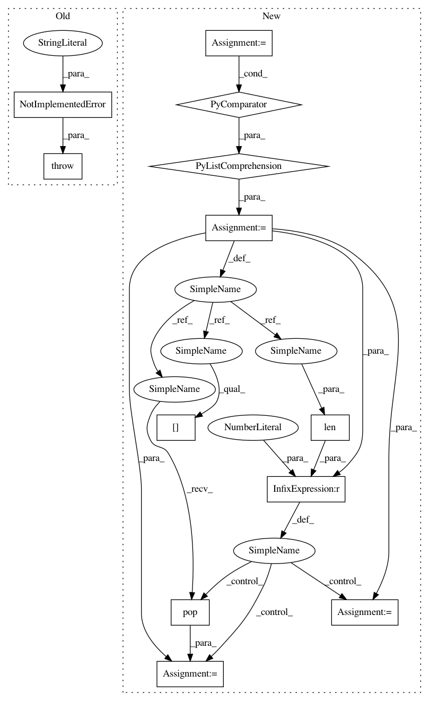

bf085c0fd5049b88110c6e63f96ef885bd354318,src/graph_transpiler/webdnn/frontend/onnx/defs/math.py,,_convert_min,#Any#Any#,230
Before Change
@ONNXConverter.register_handler("Min")
def _convert_min(converter: ONNXConverter, onnx_op: INodeProto):
raise NotImplementedError("[ONNXConverter] Operator \"Min\" is not supported yet.")
@ONNXConverter.register_handler("Sum")
def _convert_sum(converter: ONNXConverter, onnx_op: INodeProto):
After Change
@ONNXConverter.register_handler("Min")
def _convert_min(converter: ONNXConverter, onnx_op: INodeProto):
xs = [converter.get_variable(v) for v in onnx_op.input]
while len(xs) > 1:
x0 = xs.pop(0)
x1 = xs.pop(0)
check_broadcast_constraints(x0, x1)
y, = Select(None)(x0 > x1, x1, x0)
xs.append(y)
converter.set_variable(onnx_op.output[0], xs[0])
@ONNXConverter.register_handler("Sum")
In pattern: SUPERPATTERN
Frequency: 3
Non-data size: 12
Instances
Project Name: mil-tokyo/webdnn
Commit Name: bf085c0fd5049b88110c6e63f96ef885bd354318
Time: 2017-12-12
Author: y.kikura@gmail.com
File Name: src/graph_transpiler/webdnn/frontend/onnx/defs/math.py
Class Name:
Method Name: _convert_min
Project Name: hyperspy/hyperspy
Commit Name: 3a87faf42dd2b00b99184270eb798b7bdf8c2301
Time: 2017-05-23
Author: frandelapena@gmail.com
File Name: hyperspy/ui_registry.py
Class Name:
Method Name: get_gui
Project Name: mil-tokyo/webdnn
Commit Name: bf085c0fd5049b88110c6e63f96ef885bd354318
Time: 2017-12-12
Author: y.kikura@gmail.com
File Name: src/graph_transpiler/webdnn/frontend/onnx/defs/math.py
Class Name:
Method Name: _convert_max
Project Name: mil-tokyo/webdnn
Commit Name: bf085c0fd5049b88110c6e63f96ef885bd354318
Time: 2017-12-12
Author: y.kikura@gmail.com
File Name: src/graph_transpiler/webdnn/frontend/onnx/defs/math.py
Class Name:
Method Name: _convert_min